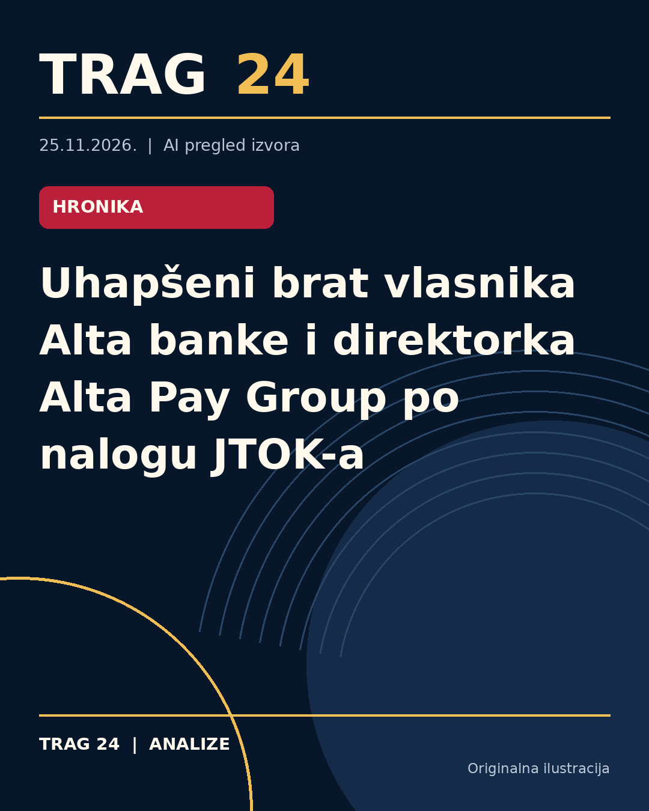

Uhapšeni brat vlasnika Alta banke i direktorka Alta Pay Group po nalogu JTOK-a

ŠTA SE DOGODILO
Po nalogu Javnog tužilaštva za organizovani kriminal (JTOK), uhapšeni su Davor M., brat vlasnika Alta banke Davora M., i Tatjana B., direktorka Alta Pay Group, u okviru istrage koja se vodi protiv Davora M.
HRONOLOGIJA
Stečajni postupak nad Alta bankom pokrenut je početkom novembra, a isplate depozita su u toku. Nakon toga, u nastavku istrage, usledilo je hapšenje Davor M. i Tatjane B. na osnovu naloga JTOK-a. Detalji postupka nisu izloženi u dostupnim informacijama.
ŠTA NAVODE IZVORI
Oba izvora navode da je uhapšeni brat vlasnika banke i direktorka Alta Pay Group, te da je hapšenje povezano sa istragom protiv Davora M. JTOK je zvanično naložio hapšenje, što potvrđuje zvanične informacije. Euronews navodi i da je hapšenje deo nastavka istrage, dok B92 dodatno potvrđuje da su hapšenja izvršena u okviru postupka javnog tužilaštva.
ŠTA JE POTVRĐENO
Potvrđeno je da su Davor M. i Tatjana B. lišeni slobode po nalogu JTOK-a u okviru istrage povezane sa vlasnikom Alta banke. Podaci o daljim okolnostima postupka ili optužbama nisu dostupni u dostavljenim tekstovima.
ŠTA NIJE POTVRĐENO
Nisu iznete informacije o tačnim razlozima hapšenja, kao ni bilo kakve optužnice ili dokazi o krivici uhapšenih. Ne postoje potvrđeni podaci o eventualnim zloupotrebama ili nezakonitim radnjama koje su dovele do stečaja banke ili hapšenja.
ŠTA OSTАJE OTVORENO: Istraga je u toku i nema zvaničnih podataka o nastavku postupka, optužbama ili daljim aktivnostima. Nije poznato da li će biti dodatnih hapšenja ili zvaničnih saopštenja u vezi sa slučajem, niti kakve posledice ova hapšenja mogu imati po druge aktere u predmetu.
Izvori
- https://www.euronews.rs/srbija/aktuelno/253681/jtok-uhapseni-brat-davora-m-i-direktorka-alta-pay-group/vest
- https://www.b92.net/info/hronika/288046/uhapsen-brat-davora-macure-i-direktorka-firme-alta-pay-group/vest
Ova analiza je pripremljena uz pomoć veštačke inteligencije na osnovu javno dostupnih izvora. Navodi izvora nisu nužno nezavisno potvrđeni.